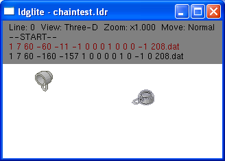
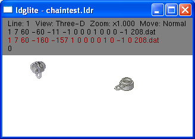
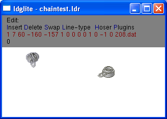
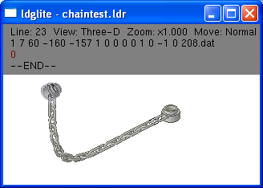
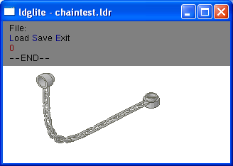
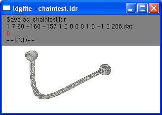

Version 1.1.9: The Ldglite hoser function now works with
the minifig chain (sorta). It still uses the same bezier hoser
function based on the code contributed by Chris Daelman, but modified
just a bit to rotate alternate chain links and locate them a bit
better. You should get a smooth curved chain with the links
properly oriented, but no gravity effects like on a real chain.
The easiest way to try out the chain function is to use your preferred
Ldraw CAD program to place the two chain end parts (208.dat) in your
model file. Then use a text editor to copy them out to a separate file.
Run ldglite in LEDIT mode on this new small file to add the links. For
this example I've used chaintest.ldr.
ldglite -le chaintest.ldr

Use the Page Down button to highlight with the second 209.dat part.

Then type the LEDIT command /EH21 and press the enter key to create a minifig chain with the 21 links.



To save the newly created chain type the LEDIT command /FS and press the enter key
to save the file with the same name.


That should do it. Now you can incorporate the chain back into your main model.
Don Heyse <dheyse@hotmail.com>
Last modified: Thu Jul 03 16:49:32 Eastern Daylight Time 2003